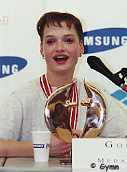

Svetlana Khorkina (RUS)
1997, 2001 and 2003 World AA Champion
1998, 2000 and 2002 European AA Champion
1996 and 2000 Olympic UB Champion
6-Time (1994, 1996, 1998, 2000, 2002, 2004) European UB Champion
5-Time (1995, 1996, 1997, 1999, 2001) World UB Champion
"I'm very easy to see on the
podium because everyone else is small!"

Medal Total
- Olympic Games: 2
Gold, 4 Silver, 1 Bronze
- World Championships: 9
Gold, 7 Silver, 2 Bronze
- World Cup: 1 Silver
- European Championships:
12
Gold, 5 Silver, 1 Bronze
Svetlana was born on January 19, 1979, in
Belgorod. Coaches wanted her to train in rhythmic gymnastics because of
her body type, but Khorkina insisted on learning artistic gymnastics.
Boris Pilkin was her first coach, and has been her only coach throughout her
entire career.
Competition Results
- 1992
- Moscow World Stars: 5th AA
- 1993
- Baltic Sea Games: 1st Team, 3rd AA, 1st V, 1st UB
- French International: 3rd UB, 5th V
- Jr. European Championships: 7th AA, 4th B, 4th FX, 8th V
- Russian Championships: 1st AA, 1st UB, 1st B, 2nd V, 3rd
FX
- 1994
- Birmingham Classic: 2nd AA
- Chunichi Cup: 3rd AA, 1st V, 3rd UB
- DTB Cup: 1st UB, 1st FX, 3rd V, 3rd B
- European Championships: 2nd Team, 2nd AA, 1st UB,
5th V, 5th B, 8th FX
- Goodwill Games: 1st Team, 1st UB, 3rd V
- Moscow World Stars: 1st AA, 2nd B, 7th FX
- World Championships (Brisbane): 9th AA, 2nd V, 2nd
UB, 8th FX
- World Championships (Dortmund): 3rd Team
- 1995
- Cottbus Grand Prix: 1st B, 2nd V, 3rd UB, 3rd FX
- European Cup: 1st AA, 2nd UB, 3rd V, 3rd FX, 6th B
- French International: 1st AA, 1st V, 1st FX, 6th B
- Moscow World Stars: 1st AA, 1st V, 1st UB, 1st B
- Russian Championships: 1st AA
- Russian Cup: 1st AA
- World Championships: 4th Team, 2nd AA, 1st
UB, 5th V
-
- 1996
- Chunichi Cup: 2nd AA
- DTB Cup: 2nd UB, 2nd B, 5th FX, 7th V
- European Championships: 2nd Team, 6th AA,
1st UB, 4th V
- ITA-BLR-ROM-RUS Meet: 1st Team, 8th AA
- Olympic Games: 2nd Team, 15th AA,
1st UB
- Russian Championships: 3rd AA
- Trophee Massilia: 2nd Team, 2nd AA
- World Championships: 1st UB
-
- 1997
- Chunichi Cup: 3rd AA, 1st UB, 2nd B, 3rd V
- Europe v. Asia: 1st Team
- GBR-RUS Dual Meet: 1st Team, 1st AA
- Moscow World Stars: 1st B, 5th UB
- Russian Cup: 1st AA, 1st UB
- Russian Nationals: 1st AA, 1st UB
- World Championships: 2nd Team, 1st AA,
1st UB, 2nd BB, 2nd FX, 8th V
-
- 1998
- Arthur Gander Memorial: 1st AA
- Cottbus Grand Prix: 1st UB, 3rd V, 3rd B, 3rd FX
- DTB Cup: 1st UB, 1st FX, 3rd V,
- European Championships: 1st AA, 1st UB, 1st
FX, 2nd Team
- French International: 2nd UB, 7th V, 7th FX, 8th B
- Glasgow Grand Prix: 1st UB, 2nd B
- Goodwill Games: 1st UB, 7th AA, 7th FX
- Moscow World Stars: 2nd AA
- Russian Cup: 1st AA
- Russian Nationals: 2nd AA
- Sagit Cup: 3rd FX, 4th VT, 7th B, 8th UB
- Swiss Cup: 2nd FX, 3rd B
- Voralberg Tournament: 1st AA
- World Cup: 2nd UB, 4th B, 4th FX,
5th V
1999
- Cottbus Grand Prix: 1st UB, 1st B, 2nd FX
DTB Cup: 1st UB, 1st FX, 2nd B
European Gymnastics Masters: 1st Team
French International: 1st AA, 1st UB, 1st FX, 3rd V
Gander Memorial: 1st AA
Glasgow Grand Prix: 1st UB, 6th B, 8th FX
Russian Championships: 2nd AA
RUS Cup: 2nd AA
Samboo Finance Cup: 1st FX, 2nd UB, 6th B
University Games: 1st Team, 1st AA, 1st UB, 1st FX
Voralberg Tournament: 1st AA
World Championships: 2nd Team, 1st UB, 3rd
FX, 12th AA
World Stars: 2nd AA
Zurich Grand Prix: 2nd UB, 5th B, 8th FX
2000
European Championships: 1st Team, 1st AA,
1st UB, 1st B
Olympics: 2nd Team, 11th AA, 1st UB,
2nd FX
RUS Championships: 7th Team, 5th AA
RUS Cup: 1st UB, 1st B
2001
Cottbus Grand Prix: 1st UB, 5th B
Goodwill Games: 2nd AA, 1st UB, 2nd FX, 4th V
Reese's International Championships: 2nd AA
World Championships: 1st AA, 1st V, 1st UB, 3rd FX
2002
European Championships: 1st AA, 1st UB, 2nd B,
5th FX
La Gala (Mexico City): 1st AA
World Championships: 4th B, 7th UB
2003
Chunichi Cup: 1st AA
DTB Cup: 2nd FX, 3rd V, 3rd UB, 3rd B
French International: 1st UB, 5th FX
GBR-RUS Dual Meet: 1st Team, 1st AA
Noynoy Grand Prix: 1st UB, 2nd FX
RUS Cup: 2nd AA
RUS Championships: 1st AA, 1st UB, 2nd FX, 3rd B
Thessaloniki International: 1st UB, 2nd FX
World Championships: 6th Team, 1st AA
2004
European Championships: 4th AA, 1st UB, 3rd B, 7th FX
Olympic Games: 3rd Team, 2nd AA, 8th UB
RUS Cup: 1st AA
- This page was last updated on December 19,
2004.
© Gymn Forum